Live coding 2
Live coding 2
This is a blog based on Jeremy Howard’s Youtube video on Live coding 2. Here, we will learn about Git, tmux, and Jupyter notebook.
Git
What is Git? Git is a version control system. There are many ways of using Git, but we will use GitHub because it is widely used. With GitHub, we can easily share our code with others.
Let’s see how we can create a repository. Let’s head over to GitHub profile and click on Repositories on the top of the page. On the right, there is a green button called ‘New’. Click the button!

You will see something like this:
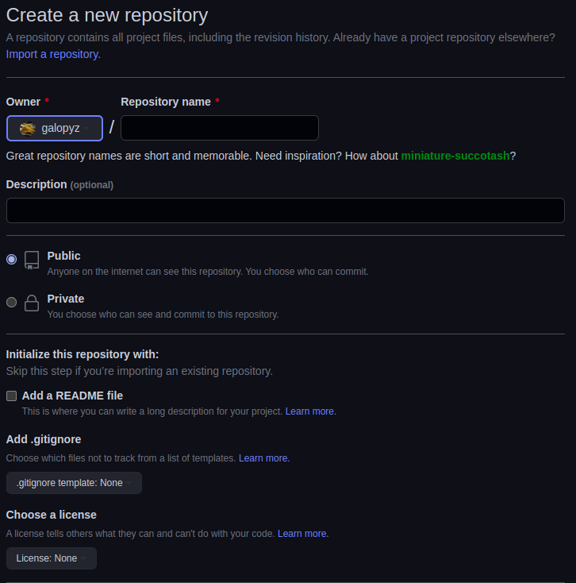
Let’s start filling in the form.
- Fill in the repository name of your choice. It can be anything you want.
- Optionally provide a description.
- We can choose our repository to be Public or Private, but it is good to make it Public for sharing.
- It’s a good idea to adda a README file. This is where we introduce others about what this repository is about.
- We add a .gitignore template with Python. This is a file that we list certain files we do not want share with others. For example, it can be secret files containing API keys or cached files.
- We optionally choose a license. Without a license, other people cannot use our code. There are many licenses, but for sharing, it is good to have permissive license, such as MIT or Apache 2.0 or copyleft license, such as GPL. I used Apache 2.0 because it allows others to do whatever they want with my code, but also provides me with protection against patent law suits. On the other hand, copyleft license has more restrictions.
- Create Repository!
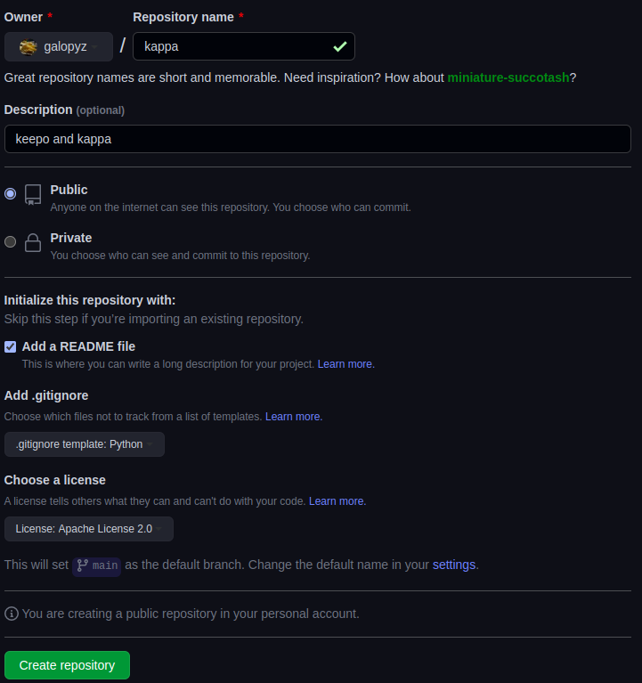
We have a repository of our own.
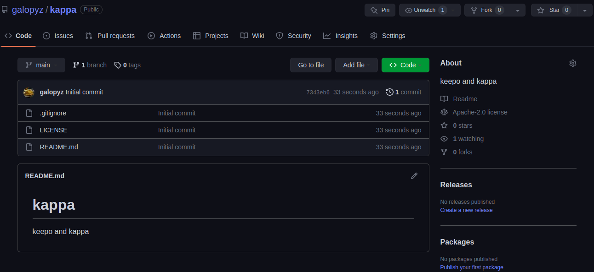
Although we can make changes using on the web app, it is easier to edit files locally in our computer using our favorite editors. There are multiple ways of cloning the repository into our local computers, but we will use SSH. To use SSH, we have to create keys. On our terminal, we type ssh-keygen. We can just press Enter for default options.
ssh is very useful tool, so it is good to know how to use it and how it works. It is good to check the wkipedia article.
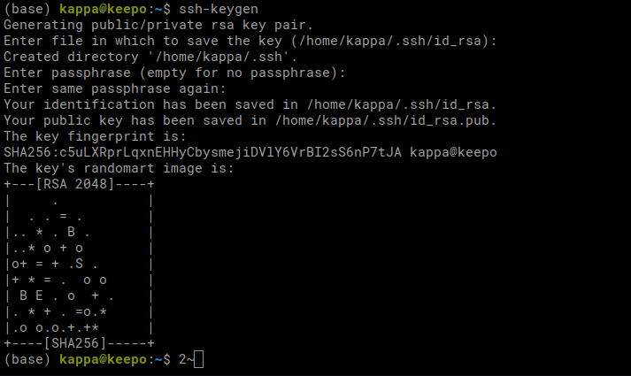
For me, it created a ~/.ssh folder, and inside it, I have the keys. One with .pub is the public key.
Never share the private key with anyone. Only share the public key.
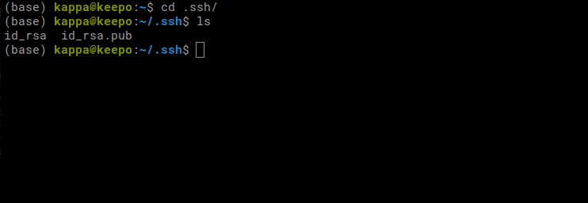
We can look at the contents of the file by using cat id_rsa.pub. Now, copy everything from ssh-rsa to email. To copy, we can highlight over the whole thing, and press Ctrl-Shift-C.
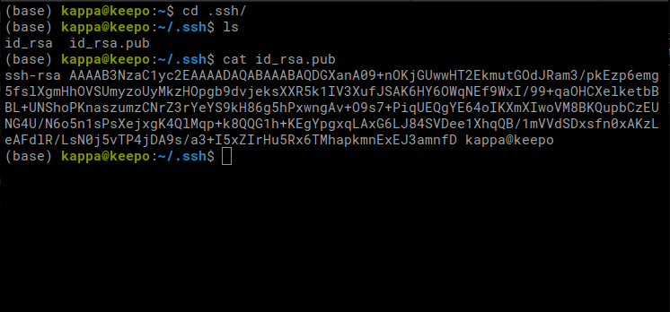
Let’s head back to our repository on GitHub and click your profile picture on the top right corner. We see ‘Settings’ on the bottom.
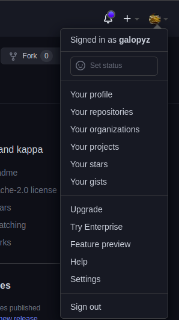
We are on the Settings page. On the left banner, we will see SSH and GPG keys. Click it.
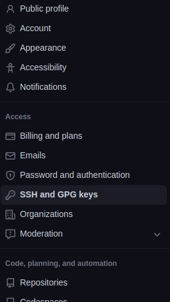
Click New SSH key on the right.
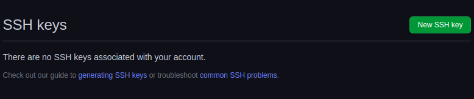
Now, we add our Title and Key. Key is the one that we copied from our terminal.
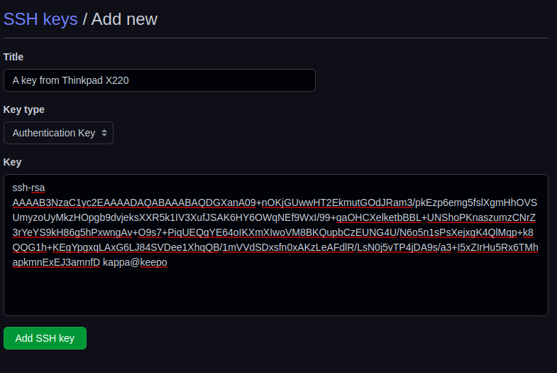
Our SSH key is added. Now, we go back to the repository page. Click the ‘Code’ button in the middle of the page and click SSH. Copy that URL.
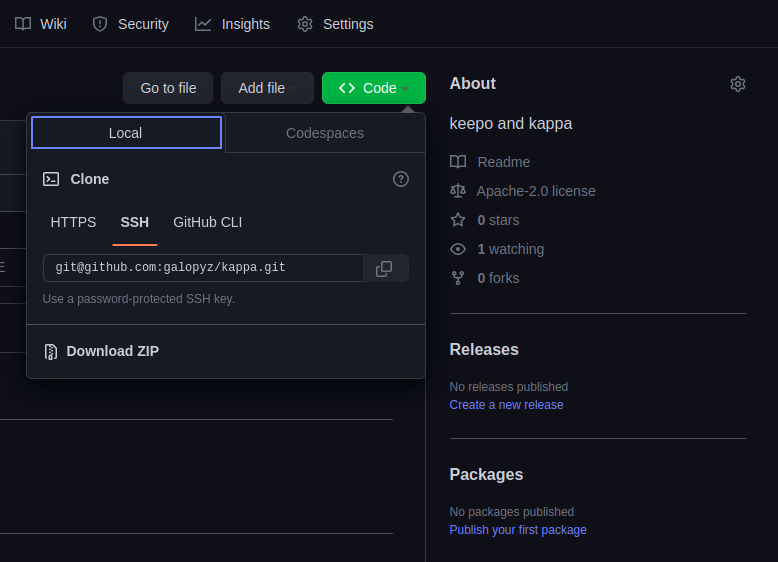
Let’s head back to our terminal and type git clone SSH_URL.
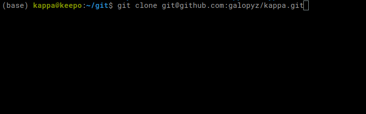
Now we have a repository. Let’s use cd to change directory into the one we just cloned. Then, we can use vim to edit the readme. Type vim README.md. If you are not familiar with vim, you can use other editors. On the editor, edit the file however you want. I just added a heading called keekee.
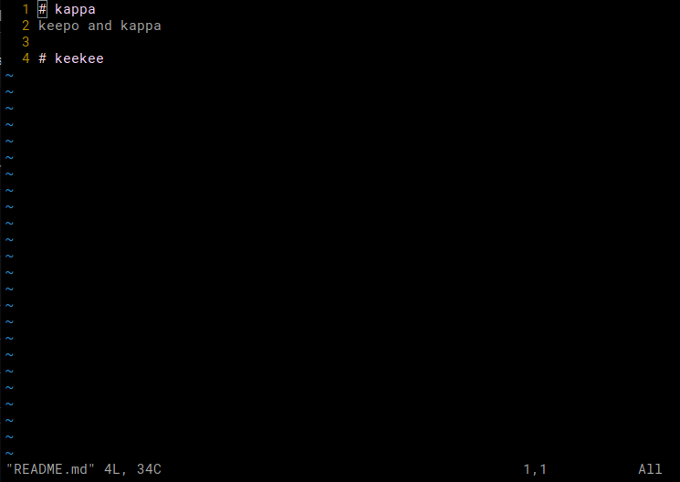
When we do git status, we get this message back. Git is tracking we have modified README file.
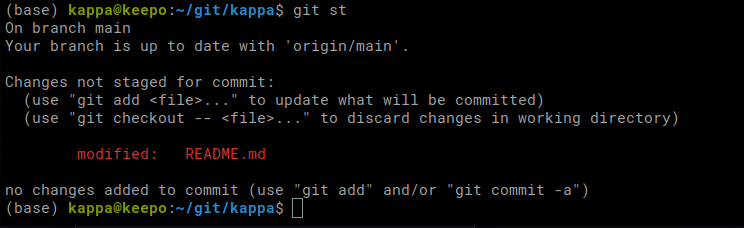
Before we can send our changes to GitHub, we have to do some work. Here are some steps:
git add README.mdadds the file to be staged. It can be any file.- Find out what’s changed by typing
git status. git commit -m "Add a heading to README"commits (saves) our changes to the file with a message. It can be any message, and it has to be in quotes.git pushpushes our changes to GitHub. Now, local changes reflect the code on GitHub.
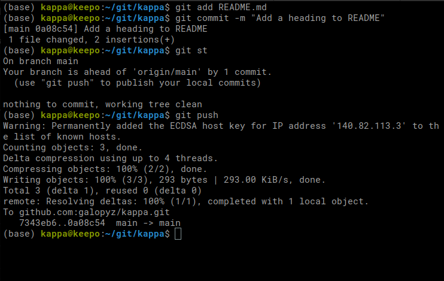
Let’s head over to our repository page. We can see that the README is changed.
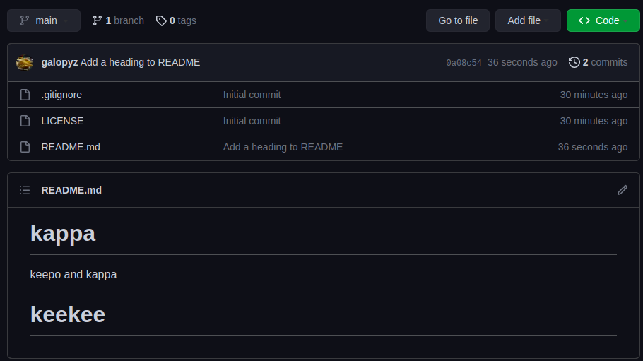
Cool! Now we can commit to GitHub from our local computers.
Tmux
Let’s learn about Tmux! With this amazing tool, we can split terminals, which boosts productivity. Install it with sudo apt install tmux on Linux or brew install tmux on Mac. Then, we can execute it by typing tmux on terminal.
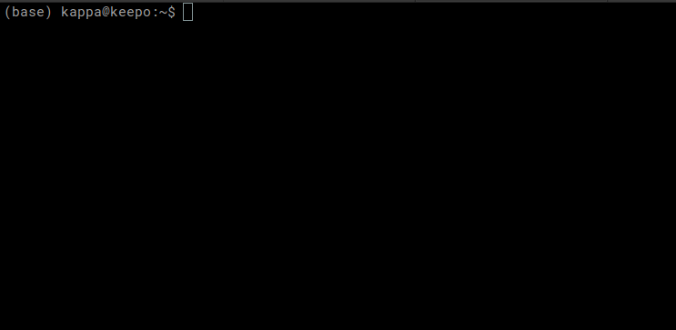
It looks the same as before except that it doesn’t have any color. Type Ctrl - B - %.
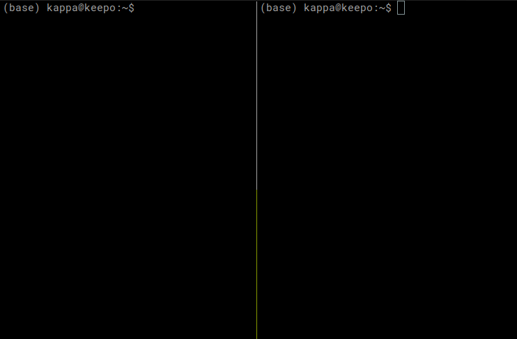
Now, we have two panels. In tmux, each of the terminal rectangle is called a panel. Now try Ctrl - B - ". It splits on the bottom.
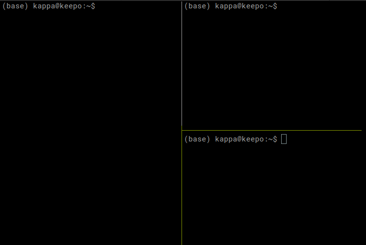
This time, let’s try Ctrl - B - Z. It zooms into the current panel. We can have a full screen for us this way, and when we want to go back to multiple panels, we type Ctrl - B - Z again.
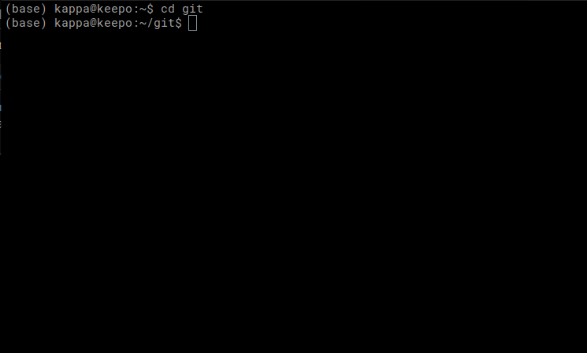
We can move around with Ctrl - B - Arrow_key. Can you try to create four panels like this below? If you need to close a panel, you can do Ctrl - D.
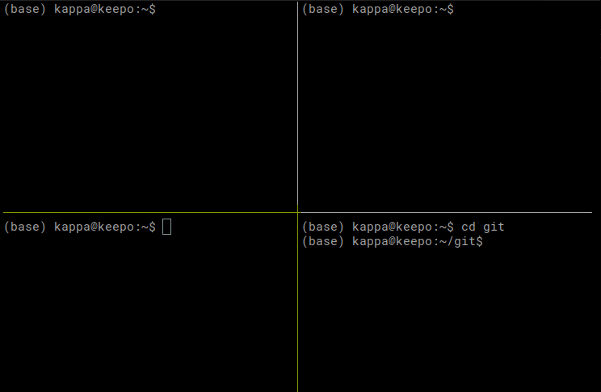
Here, we have nice four panels. If we close the tmux and terminal, we have to open everything up one by one again. Imagine each panel had a unique process running, then it takes a lot of work to restore the workspace. One easy way to solve this problem is Ctrl - B - D to deatch tmux. We can now close the terminal and reopen. Now, type tmux a to attach. It is just like how we left it.
If you would like to learn more about tmux commands, you can learn look at the guide or a cheatsheet.
Terminal tips
Here are some tips for using the terminal.
cd -: First one iscd -, which returns to a previous directory before you changed directory. It’s useful when you move to home directory withcd ~, and wanted to go back to previous directory. Instead of typing directories one by one, we can docd -.pushd ~: This is useful when we want to save where we are so that we can come back here later.popd: After usingpushd ~, we can usepopdto move to the saved directory.
Jupyter notebook
There are Jupyter extensions that can provides useful features called Jupyter Nbextensions_configurator. We can install it using mamba install -c conda-forge jupyter_nbextensions_configurator. In this command, -c conda-forge means use a channel called conda-forge. So, mamba will look for jupyter_nbextensions_configurator inside of conda-forge channel.
Another thing we will install is fastbook, which includes fastai. With mamba install -c fastchan fastbook sentencepiece, everything we need is installed.
Let’s open up Jupyter notebook inside of the new repository we created. If you pay attention to panels in the center of the screen, there are four panels now. Fourth one is Nbextensions! Click that one.
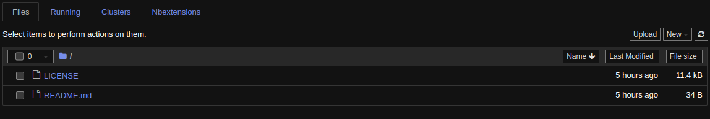
There are many extensions to explore, but I recommend ‘Collapsible Headings’. You can collapse headings with left arrow or right arrow.
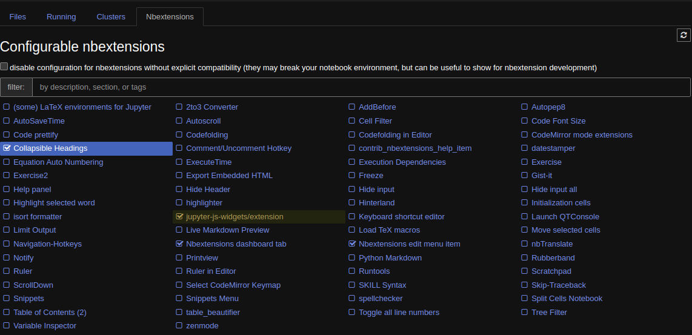
Now, create a notebook and try to import fastai. It should workwithout problem. Additionally, you can try importing fastbook and pytorch.
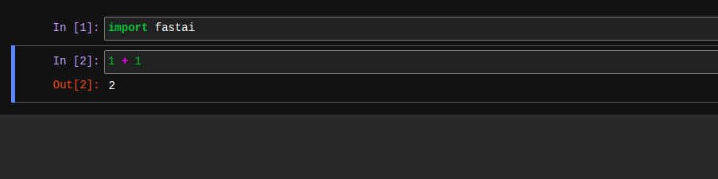
Let’s try adding a heading. Add a cell on the top and change it to a markdown cell by pressing m. To change it back to code cell, press y. Change it back to markdown and type # Heading1. Then execute the cell. You can press left arrow and right arrow to close and open cells undermeath it.
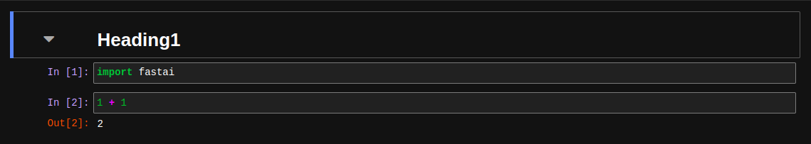
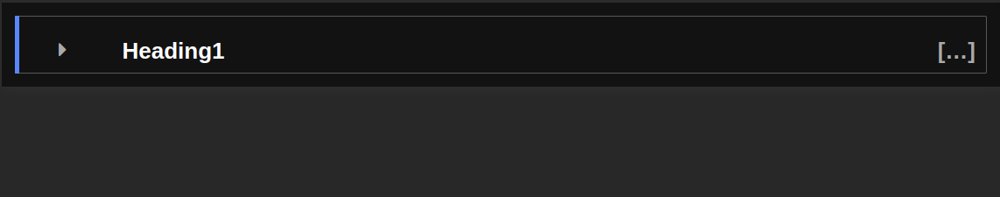
Markdown is very useful to know. If you want to know more about it, check out Quarto documentation.
On the top left, there is a File button. There are many thing we can do, such as rename the file. Most important options is ‘Close and Halt’, which is the last option.
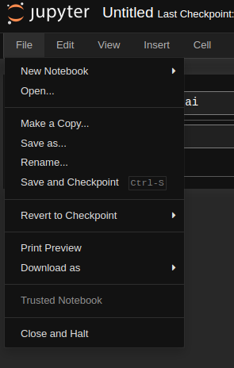
If you just close the tab, the notebook is still running in the background. Make sure to close and halt the notebook to free up computing resources.
Cool, now you can also push the change into the GitHub. Why don’t you try it?
Conclusion
In this blog, we covered how to use GitHub with ssh, tmux, and Jupyter notebook. Please watch the Youtube video if you haven’t. We haven’t done deep learning, yet but it is very important to get these steps right. You can play around with fastai and fastbook on Jupyter notebook if you want and practice using GitHub and terminal.